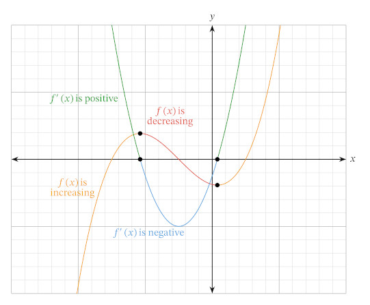

The derivatives of a function give us many different techniques for describing the different properties of a curve For example, the slope of a curve is represented by its first derivative and the concavity of the curve is represented by its second derivative. For a differentiable function 𝑓, we know that the local extrema will occur when its derivative is equal to zero We can see this graphically, where the stationary points of 𝑦=𝑓(𝑥) have the same 𝑥-value as the 𝑥-intercepts of 𝑦=𝑓′(𝑥).
This is not the only information we can see from the curve 𝑦=𝑓′(𝑥). We also know that 𝑓(𝑥) is increasing when its derivative is positive and decreasing when its derivative is negative. We can also see this information graphically. This means we can analyze the curve 𝑦=𝑓′(𝑥) to determine information about the function 𝑓. When 𝑦=𝑓′(𝑥) has an 𝑥-intercept, 𝑓 must have a stationary point. In other words, the tangent line to 𝑓(𝑥) at this point is horizontal. This could be a local extremum or it could be a point of inflection. We know when 𝑓′(𝑥) is above the 𝑥-axis, we can conclude 𝑓 is increasing. Similarly, when 𝑓′(𝑥) is below the 𝑥-axis, we can conclude 𝑓 is decreasing. We can also do this with the second derivative. Recall that the second derivative of a function tells us the concavity of the curve.
The Orange Graph is 𝑓(x) and the Green Graph is 𝑓′(x)
In The Green Graph:
𝑓′(x) = (x - 2)2 - 4
y is positive when |x| > 4
y is negative when |x| < 4
Definition: Concavity of a Function
-> We say a function 𝑓(𝑥) is concave upward on an interval 𝐼 if all of its tangents on this interval lie below the curve. Equivalently, 𝑓′(𝑥) will be increasing on 𝐼. -> We say 𝑓(𝑥) is concave downward on an interval 𝐼 if all of its tangents on this interval lie above the curve. Equivalently, 𝑓′(𝑥) will be decreasing on 𝐼.